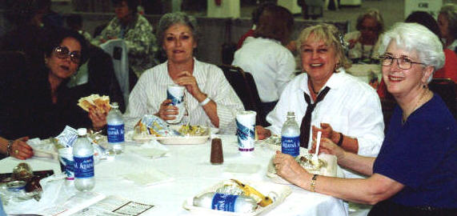
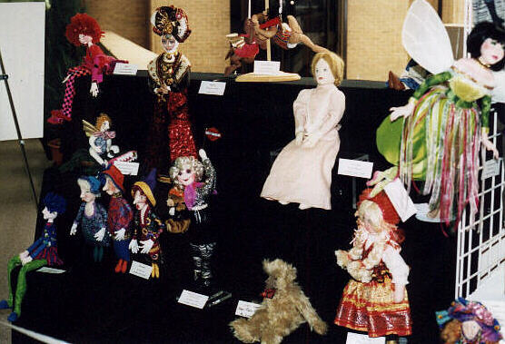
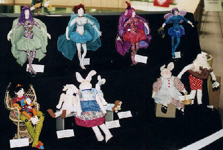
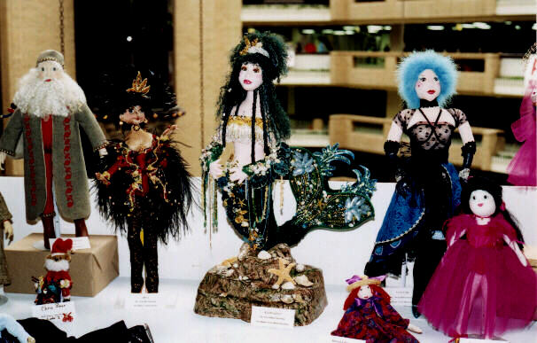
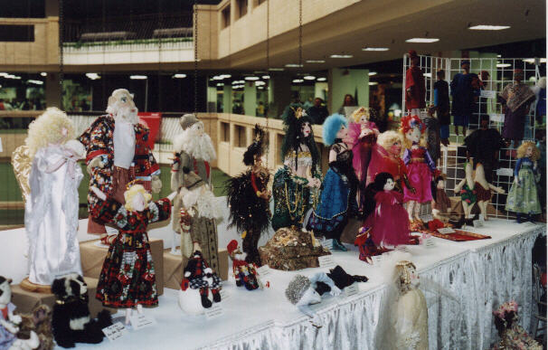
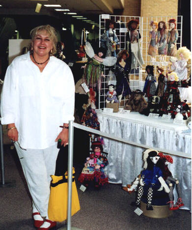
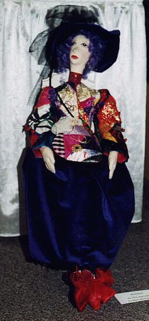
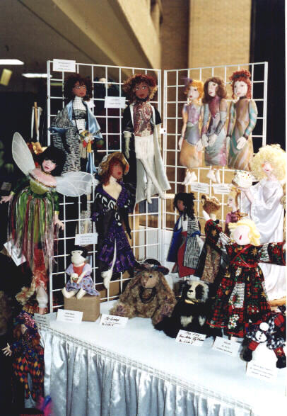

The Ditzy Doll Tarts' display at the
1999 Dallas Quilt Show
Please give these wonderful pictures a few minutes to download!


Some of the ladies taking time out for a quick bite to eat.


Some of the dolls by the Ditzy Doll Tarts.


More dolls by the Ditzy Doll Tarts. On the top row are some of our 1998
"Butterfly Lady" challenge dolls; pattern by Jacqueline Casey. Would you like to try
one yourself? Email Jacqueline for information on how to get your own "Butterfly Lady"
pattern at caseyj@dnet.net


More fabulous dolls by the Ditzy Doll Tarts.....some of the "tarts" and "divas"
grace the center table.


Looking down the tables in the other direction.....more dolls by the Ditzy's.


Genie Geer .....nothing's more fun than getting your picture taken with some
of your "girls", right Genie?


A wonderful example of elinor peace bailey's "Monique", made by Muriel Dreyfuss (mother
of Richard).....Muriel outfitted her Monique with the most amazing Victorian patchwork
jacket in a wonderful array of rich, exotic fabrics and embellished with many hours of
embroidery and handstitching.


A view of the dolls in the corner.....
Go see the other shows I've been to